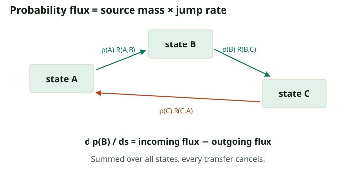

Discrete Flow Matching: Probability Moves, Tokens Jump
Return to the generative time direction
Set $s=1-t$: $s=0$ is all masks and $s=1$ is clean data. Let $\kappa(s)$ increase from zero to one. Given a clean endpoint $z$, each coordinate has conditional path
For $\kappa(s)=s$, this is exactly the mask path from the previous chapters with the clock reversed. We use a new symbol because importing a formula with the old time variable would silently change its signs.
A generator matrix is the discrete velocity object
Use the row convention: $R_s(x,y)$ is the instantaneous rate of a jump from state $x$ to a different state $y$. The state here can be an entire sequence. For $y\ne x$, require $R_s(x,y)\ge0$ and define $R_s(x,x)=-\sum_{y\ne x}R_s(x,y)$. Each row sums to zero.
For a short interval $h$, transition probabilities are $I+hR_s+o(h)$. A row probability vector evolves as $\dot p_s=p_sR_s$, or coordinatewise
The first sum is incoming probability per unit time; the second is outgoing probability per unit time. Summing over $y$ cancels every transfer, so total probability stays one. Compare this directly with the continuous continuity equation. No Brownian motion or differentiable token coordinate is needed.

Derive a conditional rate from the path
With endpoint $z^i$ supplied, only the jump $m\to z^i$ is needed. Let its rate be $\lambda(s)$. Mask probability is $1-\kappa(s)$, so the incoming probability at $z^i$ is $[1-\kappa(s)]\lambda(s)$. The desired derivative is $\kappa'(s)$. Equating them gives
This is a hazard rate: change per unit time divided by the probability mass still waiting to change. For a linear path, it is $1/(1-s)$. The rate grows near the endpoint because the remaining masks must disappear before $s=1$.
Hide the endpoint by posterior averaging
A sampler does not know $z$. The same marginalization idea used in the MIT notes applies: average conditional rates over the posterior of endpoints compatible with the current sequence. For a masked coordinate $i$ and clean vocabulary value $v$,
Here $x^{i\leftarrow v}$ is $x$ with position $i$ replaced by $v$. Visible coordinates do not jump under this construction. A denoiser trained by categorical cross-entropy supplies the posterior on the right. We learn probabilities and then construct rates, rather than doing unconstrained squared-error regression onto a rate vector that could become negative.
The algebra behind marginalization is short. Multiply a conditional incoming-flow term by the endpoint distribution and sum over endpoints. Bayes' rule turns $p(z)p_s(x\mid z)$ into $p_s(x)p_s(z\mid x)$, leaving the posterior average of the conditional rate. Linearity of the continuity equation does the rest. This is the discrete analogue of the existing marginal vector-field construction.
Discrete Flow Matching develops this viewpoint for more general source distributions, paths, and couplings. Its central connection here is that learned endpoint posteriors can parameterize probability velocities that transport the desired discrete marginals.
A one-token calculation you can check completely
Let the endpoint be red with probability $0.7$ and blue with probability $0.3$, and take $\kappa(s)=s$. In state order $(m,\text{red},\text{blue})$,
Multiplying gives $p_sR_s=(-1,0.7,0.3)$, exactly the derivative of the desired path. At $s=0.6$, the two outgoing rates are $1.75$ and $0.75$. They are not probabilities: a rate can exceed one. With $h=0.1$, an Euler update stays masked with probability $0.75$, reveals red with probability $0.175$, and reveals blue with probability $0.075$.
Where the discrete score fits
For a forward noising generator $Q_t$, under the same row convention, time reversal uses off-diagonal rates
This follows from Bayes' rule over a short time interval: reverse flow from $x$ to $y$ must match forward flow from $y$ to $x$. The quantity replacing a continuous spatial score is a ratio of neighboring state probabilities. SEDD trains such ratios with a score-entropy objective.
For an absorbing mask path with survival $a(t)$, let $x^i=m$ and $y=x^{i\leftarrow v}$. A direct factorization of corruption probabilities gives
The forward masking rate is $-a'(t)/a(t)$. Multiply it by this ratio to recover $[-a'(t)/(1-a(t))]\mu^i(v\mid x)$, the reverse rate already derived. Thus the denoiser and ratio views meet exactly for this mask process. This is a discrete counterpart to relating scores and velocities, but it is not the Gaussian conversion formula from Lecture 3.
Positivity is the discrete solver constraint
For a full-state Euler step, $1+hR_s(x,x)$ must stay nonnegative; equivalently $h$ cannot exceed the inverse total exit rate. If $M$ coordinates are masked on the linear path, that total rate is $M/(1-s)$. A full-state Euler step allows at most one coordinate jump and needs $h\le(1-s)/M$.
A parallel coordinate update instead uses a product of per-coordinate kernels. Its individual probability constraint is $h\le1-s$, but it permits simultaneous jumps and therefore has the finite-step dependency error from Part 3. These are different discretizations with different constraints; checking just one coordinate does not validate a full-state Euler matrix.
Continuous-time rates need not be evaluated at the singular endpoint. One can use event times, valid finite-interval transitions, or an explicitly specified final projection. For the linear absorbing path, the finite reveal probability $h/(1-s)$ reaches one exactly when the step lands at the endpoint, while remaining a valid probability.
Check your understanding: Does a correct probability path uniquely determine its jump rates?
No. Different generators can transport the same marginals. Extra probability circulation can cancel in the continuity equation while changing trajectories. Any proposed correction still has to preserve nonnegative off-diagonal rates and the desired marginal evolution.
From the construction to model design
Read LLaDA, Dream, and model design next. For the mathematical extensions, use Gat et al., Campbell et al., and Lou et al. as complementary starting points.